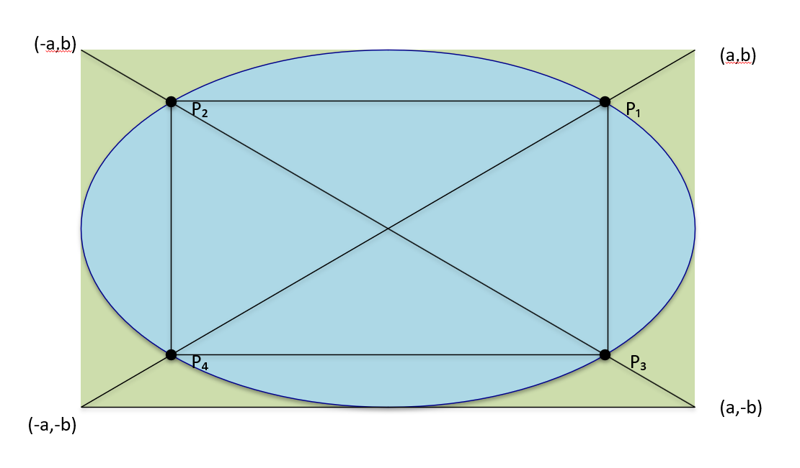

1. Introduction
The problem of finding the largest rectangle that can be inscribed in an ellipse is a classical one in geometry. While analytic methods using calculus or affine transformations are well known, this document presents a purely geometric construction that is both intuitive and visually elegant. The method relies on drawing diagonals across a bounding rectangle and identifying their intersections with the ellipse.
2. The Ellipse and Bounding Rectangle
Consider the ellipse defined by the equation:
This ellipse is centered at the origin and has semi-major axis a along the x-axis and semi-minor axis b along the y-axis. We construct an axis-aligned rectangle that exactly bounds the ellipse. The corners of this rectangle are located at:
This rectangle will play a key role in the construction.
3. Diagonal Construction
Next, we draw the two diagonals of the bounding rectangle: one from (−a, −b) to (a, b), and the other from (−a, b) to (a, −b). These diagonals intersect the ellipse in four points. These intersection points form the vertices of a new rectangle that is inscribed within the ellipse. This construction is purely geometric and does not require any algebraic optimization.
4. Analytic Verification
To verify the construction analytically, consider the lines defined by the diagonals:
Substituting y = (b/a)x into the ellipse equation yields:
⇒ 2x²/a² = 1
⇒ x = ±a/√2
⇒ y = ±b/√2
Thus, the intersection points are located at:
These four points form a rectangle with side lengths a√2 and b√2, giving an area of:
To confirm that this is the maximum possible area for an axis-aligned rectangle inside the ellipse, we apply the AM–GM inequality. Let x and y be the half-lengths of the rectangle's sides. The constraint is:
Using AM–GM:
⇒ xy ≤ ab/2
⇒ Area ≤ 2ab
Equality occurs only when x = a/√2 and y = b/√2, confirming that our construction yields the maximum.
Explanation of the AM–GM Inequality
The AM–GM inequality is a classical result in mathematics stating that for any two positive numbers u and v, the arithmetic mean is always greater than or equal to the geometric mean:
Equality holds only when u = v. In the context of the ellipse problem, we apply this inequality to the two positive quantities x²/a² and y²/b². Since the point (x, y) lies inside the ellipse, these two terms satisfy the constraint:
By AM–GM, we have:
Rearranging this expression gives:
Since the area of the inscribed rectangle is A = 4xy, the inequality above implies:
This shows that no axis-aligned rectangle inside the ellipse can have area greater than 2ab. Moreover, equality occurs only when the two terms x²/a² and y²/b² are equal, which leads to the specific values x = a/√2 and y = b/√2. These are exactly the coordinates obtained from the geometric diagonal construction, confirming that the construction indeed produces the rectangle of maximum area.
5. Conclusion
This geometric construction provides a simple and elegant method for identifying the largest axis-aligned rectangle that can be inscribed in an ellipse. By using the diagonals of the bounding rectangle, we obtain the optimal rectangle without resorting to calculus or coordinate transformations. This approach offers a visually intuitive alternative that may be especially useful in educational settings.